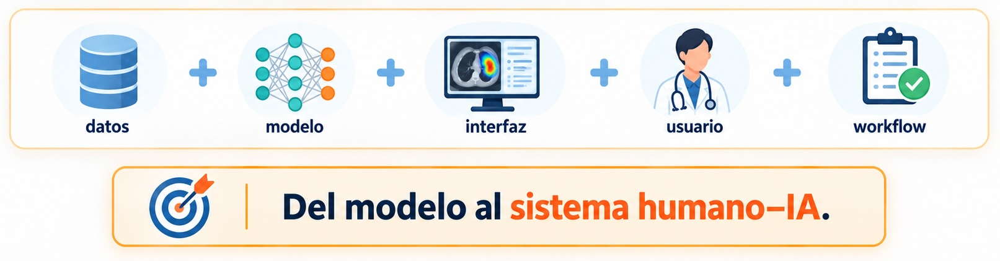
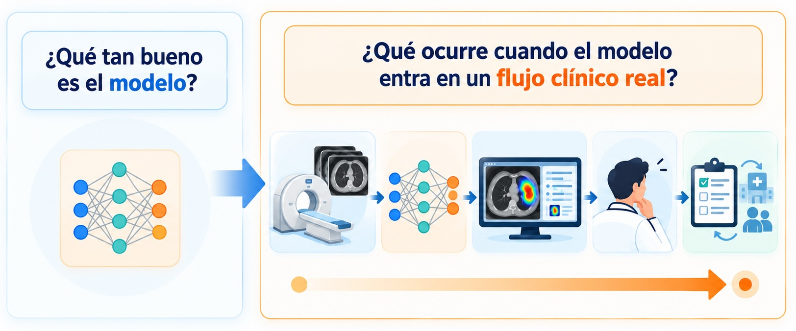
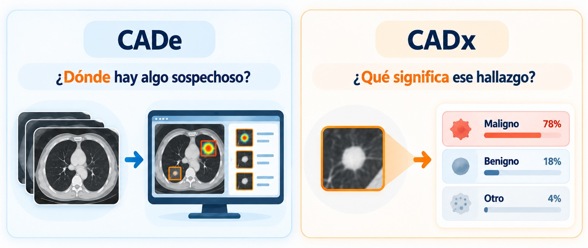
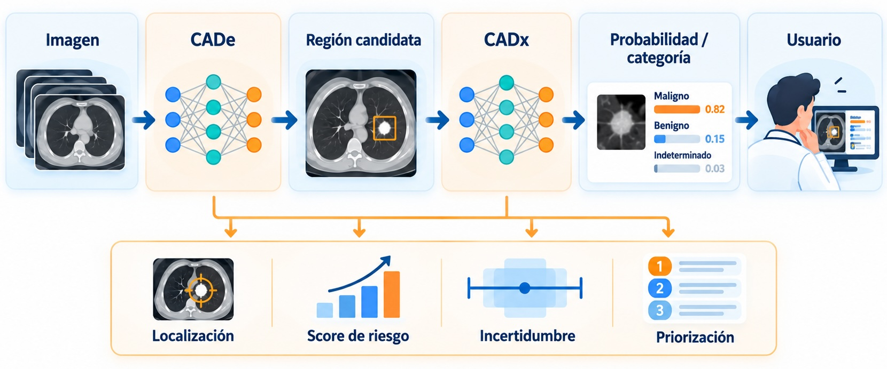
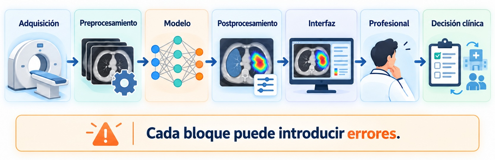
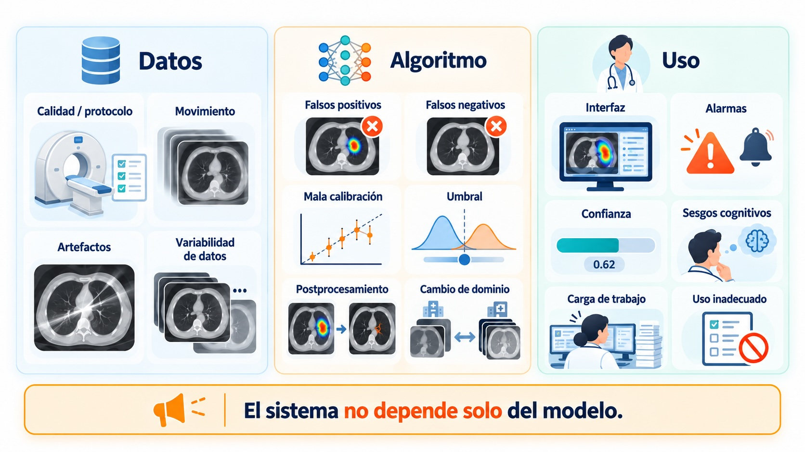
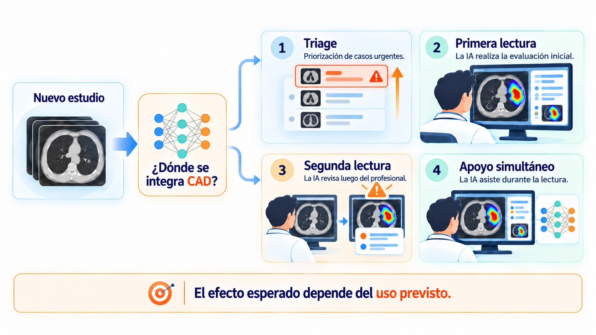
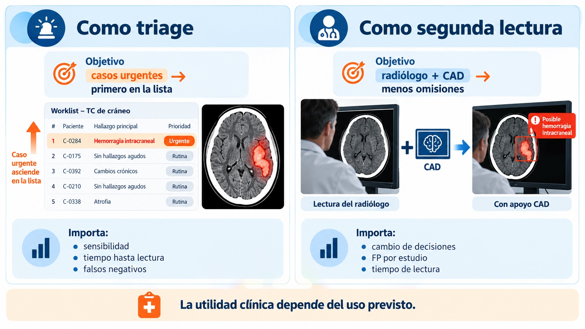

Unidad 3 — Detección, clasificación y diagnóstico asistido
Clse 3 · Del modelo al sistema clínico
Ignacio Scarinci
Del modelo al sistema clínico
Hasta ahora analizamos componentes:
clasificación y detección;
calibración e incertidumbre;
explicabilidad.
Pero una buena red neuronal todavía no es una herramienta clínica.

Pregunta guía

Objetivos de la clase
Al final deberíamos poder:
distinguir CADe de CADx;
reconocer dónde puede fallar un sistema CAD completo;
diferenciar validación interna, externa, temporal y prospectiva;
interpretar métricas en función de prevalencia y población;
entender el lugar de federated learning en escenarios multicéntricos;
evaluar críticamente un dataset sin confundir benchmark con práctica clínica.
1. CAD: del algoritmo al sistema
¿Qué es CAD?
Computer-Aided Detection / Diagnosis
Sistemas computacionales diseñados para asistir al profesional en tareas de detección, caracterización o diagnóstico.

CADe y CADx no son excluyentes

Un pipeline CAD completo

¿Dónde puede fallar?

Human-in-the-loop
En muchas aplicaciones, el objetivo no es reemplazar al profesional.
#| echo: falseflowchart LR H[Humano] <--> C((+)) <--> IA[IA] classDef human fill:#DCEBFA,stroke:#3973AC,stroke-width:2px,color:#17324D classDef assist fill:#E2F3E8,stroke:#3A8F5B,stroke-width:2px,color:#194D2D classDef plus fill:#FFF3CD,stroke:#B8860B,stroke-width:2px,color:#5C4500 class H human class C plus class IA assist
#| echo: false
flowchart LR
H[Humano] <--> C((+)) <--> IA[IA]
classDef human fill:#DCEBFA,stroke:#3973AC,stroke-width:2px,color:#17324D
classDef assist fill:#E2F3E8,stroke:#3A8F5B,stroke-width:2px,color:#194D2D
classDef plus fill:#FFF3CD,stroke:#B8860B,stroke-width:2px,color:#5C4500
class H human
class C plus
class IA assist
La IA puede:
priorizar estudios
señalar regiones
ofrecer una segunda lectura
estimar riesgo
sugerir una clasificación
derivar casos inciertos
El mismo modelo, cuatro usos distintos

Ejemplo: detector de hemorragia intracraneal

Sesgos de la automatización
Un sistema consistente puede modificar la conducta humana.
\[
\text{modelo marca una región}
\Rightarrow
\text{atención concentrada allí}
\]
El CAD puede crear errores nuevos que no ocurrirían sin asistencia.
El problema opuesto: fatiga de alertas
Si el sistema genera demasiadas alarmas:
flowchart LR A[Muchos falsos positivos] --> B[Sobrecarga] B --> C[Pérdida de confianza] C --> D[Alertas ignoradas]
flowchart LR
A[Muchos falsos positivos] --> B[Sobrecarga]
B --> C[Pérdida de confianza]
C --> D[Alertas ignoradas]
Un detector con recall muy alto puede ser clínicamente inútil si produce demasiadas marcas por estudio.
Primera idea clave
\[
\boxed{
\text{métrica del modelo}
\neq
\text{utilidad clínica}
}
\]
Para evaluar un sistema necesitamos estudiar:
algoritmo;
interfaz;
usuario;
población;
workflow;
consecuencia de los errores.
2. De validación técnica a validación clínica
La escalera de validación
flowchart LR A[Desempeño técnico] --> B[Validación interna] B --> C[Validación externa] C --> D[Evaluación con usuarios] D --> E[Evaluación prospectiva] E --> F[Impacto clínico]
flowchart LR
A[Desempeño técnico] --> B[Validación interna]
B --> C[Validación externa]
C --> D[Evaluación con usuarios]
D --> E[Evaluación prospectiva]
E --> F[Impacto clínico]
Cada escalón responde una pregunta diferente.
Validación interna
Evaluamos con datos provenientes de una población similar a la utilizada para desarrollar el modelo.
Pero en imágenes médicas importa qué unidad estamos separando.
La unidad de partición
En muchos problemas médicos:
\[
\boxed{\text{unidad de split} = \text{paciente}}
\]
no:
\[
\boxed{\text{unidad de split} = \text{imagen}}
\]
Porque múltiples imágenes pueden compartir información clínica, anatómica y de adquisición.
Leakage no es solo repetir pacientes
También puede aparecer cuando:
usamos todo el dataset para normalizar;
ajustamos preprocessing mirando el test;
seleccionamos hiperparámetros con el test;
mezclamos estudios longitudinales del mismo paciente;
hacemos feature selection antes del split.
El test debe permanecer informacionalmente aislado hasta la evaluación final.
Validación externa
Usamos datos independientes del conjunto de desarrollo.
Idealmente:
otro hospital
otra región
otros equipos;
otros protocolos;
otra población.
\[
P_{external}(x,y)
\neq
P_{development}(x,y)
\]
El modelo funcionaba muy bien…
\[
AUC_{interno}=0.94
\]
pero:
\[
AUC_{externo}=0.79
\]
¿El modelo está “mal”?
No necesariamente. Puede estar revelándose un domain shift.
¿De dónde viene el domain shift?
flowchart TD S[Domain shift] --> A[Población] S --> B[Prevalencia] S --> C[Scanner] S --> D[Protocolo] S --> E[Reconstrucción] S --> F[Criterio diagnóstico]
flowchart TD
S[Domain shift] --> A[Población]
S --> B[Prevalencia]
S --> C[Scanner]
S --> D[Protocolo]
S --> E[Reconstrucción]
S --> F[Criterio diagnóstico]
La validación externa prueba dependencias que el test interno puede ocultar.
¿Y si queremos entrenar con varios hospitales?
La validación externa nos muestra que distintos centros pueden tener distribuciones diferentes.
Una respuesta natural sería entrenar con datos de varios hospitales.
Pero aparece una restricción frecuente:
\[
\boxed{\text{los datos clínicos no siempre pueden centralizarse}}
\]
Ahí aparece Federated Learning.
Federated Learning: idea básica
flowchart LR S[Modelo global] --> A[Hospital A] S --> B[Hospital B] S --> C[Hospital C] A --> UA[Actualización local] B --> UB[Actualización local] C --> UC[Actualización local] UA --> G[Agregación] UB --> G UC --> G G --> S
flowchart LR
S[Modelo global] --> A[Hospital A]
S --> B[Hospital B]
S --> C[Hospital C]
A --> UA[Actualización local]
B --> UB[Actualización local]
C --> UC[Actualización local]
UA --> G[Agregación]
UB --> G
UC --> G
G --> S
Los datos permanecen en cada institución.
Lo que se intercambia son parámetros, gradientes o actualizaciones del modelo.
¿Qué problema intenta resolver?
Federated learning puede permitir:
entrenar con datos multicéntricos sin reunirlos físicamente
incorporar mayor diversidad de scanners, protocolos y poblaciones
colaborar entre instituciones con restricciones de gobernanza de datos
\[
\boxed{
D \rightarrow \text{validación externa}
}
\]
Aprender de múltiples centros puede mejorar la robustez, pero no elimina la necesidad de validación independiente.
Validación temporal
Otra forma de simular despliegue:
\[
\text{train: 2018--2023}
\]
\[
\text{test: 2024--2025}
\]
Entrenamos con el pasado y evaluamos sobre pacientes futuros.
Puede revelar cambios en:
práctica clínica
protocolos
equipos
población
Retrospectivo vs prospectivo
Retrospectivo
Datos ya existentes.
Ventajas: - rápido; - barato; - control experimental.
Limitación: - reproduce imperfectamente el workflow real.
Prospectivo
El protocolo se define antes de observar nuevos casos.
Ventaja: - mayor realismo clínico.
Costo: - tiempo; - logística; - complejidad.
3. ¿Mejora al profesional?
AUC = 0.95… ¿y ahora?
Un modelo puede tener:
\[
AUC=0.95
\]
y aun así no sabemos:
\[
\boxed{\text{¿mejora el desempeño del profesional?}}
\]
Para responderlo necesitamos comparar:
\[
\text{humano sin IA}
\quad vs \quad
\text{humano + IA}
\]
Un diseño más realista
Evitar
siempre “sin IA” primero;
mismos casos inmediatamente después;
orden fijo;
lectores no representativos.
Preferir
orden aleatorizado;
washout;
múltiples lectores;
múltiples casos;
condición clínica plausible.
Una paradoja posible
Puede ocurrir:
\[
\text{modelo} > \text{humano}
\]
cuando se evalúan aislados,
pero:
\[
\text{humano + modelo} < \text{humano}
\]
cuando trabajan juntos.
¿Cómo puede ocurrir?
flowchart LR A[Buen modelo] --> B{Integración} B -->|Mala| C[Automation bias] B -->|Mala| D[Alert fatigue] B -->|Mala| E[Interfaz confusa] B -->|Mala| F[Sobreconfianza] C --> G[Peor sistema] D --> G E --> G F --> G
flowchart LR
A[Buen modelo] --> B{Integración}
B -->|Mala| C[Automation bias]
B -->|Mala| D[Alert fatigue]
B -->|Mala| E[Interfaz confusa]
B -->|Mala| F[Sobreconfianza]
C --> G[Peor sistema]
D --> G
E --> G
F --> G
Segunda idea clave
\[
\boxed{
\text{desempeño humano–IA}
\text{ no se deduce }
\text{del desempeño del modelo aislado}
}
\]
¿Qué pregunta responde cada diseño?
Diseño
Pregunta
Test interno
¿Generaliza dentro de mi cohorte?
Externo
¿Generaliza a otro dominio?
Temporal
¿Generaliza hacia el futuro?
Prospectivo
¿Funciona cuando se despliega bajo protocolo real?
Reader study
¿Mejora al profesional?
4. Datasets: el benchmark no es el hospital
El benchmark no es el hospital
Los datasets públicos son fundamentales para:
desarrollo inicial;
reproducibilidad;
comparación de métodos;
enseñanza e investigación.
Pero:
\[
P_{benchmark}(x,y)
\neq
P_{clínica}(x,y)
\]
\[
\boxed{\text{buen resultado en benchmark}}
\not\Rightarrow
\boxed{\text{buen desempeño clínico}}
\]
Antes de usar un dataset
¿De dónde vienen los datos?
población;
criterios de inclusión;
centro / centros;
modalidad y protocolo;
prevalencia.
¿Qué significa la referencia?
etiqueta por imagen, lesión o paciente;
uno o varios expertos;
consenso;
patología / seguimiento;
split por paciente;
licencia.
Un dataset es una muestra de un proceso clínico y técnico, no solo una carpeta de archivos.
Las etiquetas también tienen incertidumbre
En muchos problemas médicos:
\[
y^{(1)} \neq y^{(2)}
\]
puede ser completamente razonable.
La referencia puede provenir de:
un lector;
consenso;
múltiples lectores;
patología;
seguimiento clínico.
El error del modelo debe interpretarse en relación con la incertidumbre de la referencia.
Algunos datasets
Dataset
Modalidad
Anotación / uso típico
CheXpert / MIMIC-CXR
RX
clasificación; etiquetas derivadas de reportes
VinDr-CXR
RX
detección; bounding boxes
LIDC-IDRI
CT
nódulos; múltiples lectores
BraTS
MRI
segmentación de tumor cerebral
KiTS
CT
segmentación de riñón / tumor
TCIA
varias
colecciones oncológicas heterogéneas
No necesitamos memorizar la lista. Lo importante es preguntar:
\[
\boxed{\text{¿este dataset representa la pregunta clínica que quiero estudiar?}}
\]
5. Integración conceptual de la unidad
De la imagen al sistema clínico
flowchart TD A[Imagen médica] --> B[Clasificación / detección] B --> C[Score] C --> D[Calibración] D --> E[Incertidumbre] B --> F[Explicabilidad] E --> G[Sistema CAD] F --> G G --> H[Validación interna] H --> I[Validación externa] I --> M[Robustez multicéntrica / FL] M --> J[Evaluación clínica]
flowchart TD
A[Imagen médica] --> B[Clasificación / detección]
B --> C[Score]
C --> D[Calibración]
D --> E[Incertidumbre]
B --> F[Explicabilidad]
E --> G[Sistema CAD]
F --> G
G --> H[Validación interna]
H --> I[Validación externa]
I --> M[Robustez multicéntrica / FL]
M --> J[Evaluación clínica]
La pregunta fue cambiando
Al comienzo de la unidad:
\[
f_\theta(x)
\]
¿Cómo hago una buena predicción?
Al final:
\[
\boxed{
\text{¿cómo se comporta el sistema completo en una población real?}
}
\]
Cinco niveles que no debemos confundir
flowchart LR A[1. Predicción] --> B[2. Probabilidad] B --> C[3. Incertidumbre] C --> D[4. Explicación] D --> E[5. Utilidad clínica]
flowchart LR
A[1. Predicción] --> B[2. Probabilidad]
B --> C[3. Incertidumbre]
C --> D[4. Explicación]
D --> E[5. Utilidad clínica]
Una mejora en un nivel no garantiza una mejora en el siguiente.
Qué debería informar un estudio serio
Como mínimo:
población y criterios de inclusión
split y prevención de leakage
métricas y umbral
calibración cuando corresponda
análisis por subgrupos
validación externa
intended use
limitaciones
Checklist antes de confiar en un resultado
Dataset
¿representativo?
¿split por paciente?
¿ground truth?
¿prevalencia?
Sistema
¿uso previsto?
¿validación externa?
¿generalización multicéntrica?
¿usuarios reales?
¿impacto en workflow?
Tres frases para llevarse
1
Un modelo no es un sistema clínico.
2
Un test interno no demuestra generalización clínica.
3
Aprender de más centros no reemplaza validar en una población independiente.